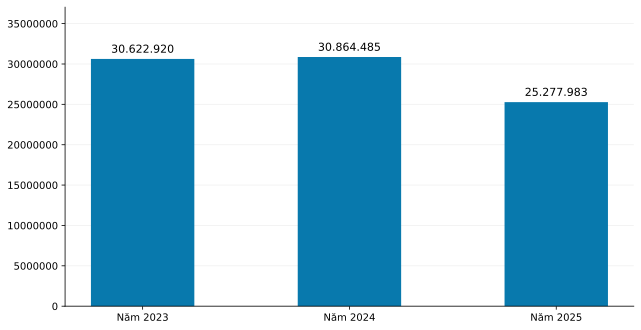
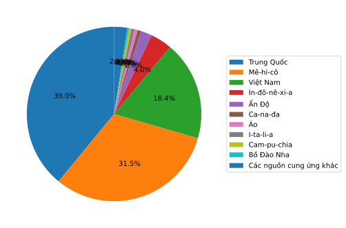
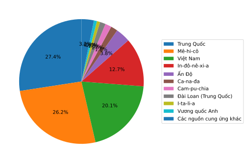
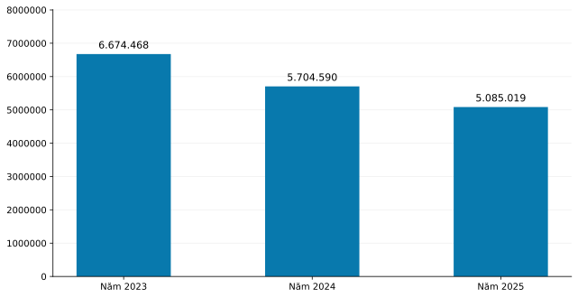
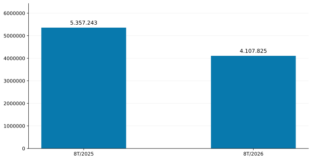

Ấn Độ khởi xướng điều tra chống bán phá giá và chống trợ cấp đối với ống đồng rãnh trong từ Việt Nam, Trung Quốc và Thái Lan
Ngày 29 tháng 9 năm 2026, Tổng vụ Phòng vệ thương mại Ấn Độ (DGTR) thuộc Bộ Thương mại và Công nghiệp Ấn Độ thông báo khởi xướng điều tra chống bán phá giá (CBPG) và chống trợ cấp (CTC) đối với sản phẩm ống và ống dẫn bằng đồng rãnh trong (IGT) có xuất xứ hoặc nhập khẩu từ Việt Nam, Trung Quốc và Thái Lan, trên cơ sở Hồ sơ đề nghị của ngành sản xuất trong nước Ấn Độ do Công ty MetTube đại diện.
Sản phẩm bị điều tra thuộc các mã HS 7411 10 00, 7411 21 00, 7411 22 00 và 7411 29 00. Thời kỳ điều tra CBPG và CTC từ ngày 01 tháng 4 năm 2025 đến ngày 31 tháng 3 năm 2026; thời kỳ xem xét thiệt hại gồm các năm tài chính 2022-2023, 2023-2024, 2024-2025 và thời kỳ điều tra. DGTR cho rằng có bằng chứng sơ bộ về biên độ bán phá giá dương và cao hơn mức tối thiểu đối với hàng hóa nhập khẩu từ cả ba nước. Đối với Việt Nam, DGTR khởi xướng điều tra 24 chương trình trợ cấp, liên quan đến thuế, tín dụng, xúc tiến thương mại và cung cấp hàng hóa, dịch vụ với mức giá thấp hơn giá thông thường.
Về thiệt hại, DGTR cho rằng lượng nhập khẩu từ các nước bị điều tra tăng trong thời kỳ xem xét và tiếp tục chiếm tỷ trọng lớn trong nhu cầu của thị trường Ấn Độ. Trong khi đó, ngành sản xuất trong nước có thị phần hạn chế, sản lượng thấp so với công suất, tồn kho gia tăng và chưa thể nâng giá bán đủ để bù đắp chi phí. DGTR nhận định có đủ bằng chứng sơ bộ cho thấy hàng hóa bị điều tra gây cản trở đáng kể đối với quá trình hình thành ngành sản xuất trong nước và có mối quan hệ nhân quả với tình trạng thiệt hại.
Theo thông báo khởi xướng, các bên liên quan phải đăng ký và nộp hồ sơ thông qua Cổng thông tin SETU của DGTR, mã vụ việc CVD/OI/009/2026. Bản trả lời bản câu hỏi, gồm bản mật và không mật, phải được nộp trong vòng 37 ngày kể từ ngày gửi thông báo; ý kiến về phạm vi sản phẩm bị điều tra và phương pháp phân loại sản phẩm phải được nộp trong vòng 15 ngày. Trường hợp cần gia hạn, yêu cầu phải được gửi ít nhất một ngày trước thời hạn ban đầu. Các bên không hợp tác hoặc không cung cấp thông tin đầy đủ, đúng hạn có thể bị DGTR sử dụng các dữ kiện sẵn có, kể cả dữ kiện bất lợi, để xác định biên độ CBPG và CTC.
Cục Phòng vệ thương mại khuyến nghị các doanh nghiệp sản xuất, xuất khẩu Việt Nam liên quan nghiên cứu kỹ thông báo khởi xướng, rà soát sản phẩm và mã PCN, chủ động bố trí nguồn lực và cân nhắc sử dụng tư vấn có kinh nghiệm khi cần thiết. Doanh nghiệp cần hợp tác đầy đủ với DGTR, đặc biệt trong việc nộp bản trả lời đúng thời hạn, tham gia thẩm tra và điều trần, đồng thời gửi các ý kiến, lập luận trong quá trình điều tra nhằm hạn chế nguy cơ bị áp dụng mức thuế bất lợi. Cục Phòng vệ thương mại đề nghị các doanh nghiệp chủ động liên hệ, phối hợp với Cục để được hỗ trợ và cung cấp thông tin kịp thời.
TIN TRONG NƯỚC
Hoa Kỳ ban hành kết luận sơ bộ vụ việc điều tra chống trợ cấp đối với máy nén khí nhập khẩu từ Việt Nam
Bộ Thương mại Hoa Kỳ (DOC) mới đây đã ban hành kết luận sơ bộ trong vụ việc điều tra chống trợ cấp đối với sản phẩm máy nén khí nhập khẩu từ Việt Nam, Trung Quốc và Malaysia. Vụ việc được DOC khởi xướng ngày 21 tháng 5 năm 2026 theo yêu cầu của Công ty MAT Industries, LLC. Sản phẩm bị điều tra chủ yếu thuộc các mã HS 8414.80.16.15, 8414.80.16.25, 8414.80.16.35 và 8414.80.16.85; mã vụ việc C-552-857.
DOC đã lựa chọn 02 doanh nghiệp Việt Nam làm bị đơn bắt buộc, tuy nhiên 01 doanh nghiệp từ chối tham gia nên hiện Việt Nam có 01 doanh nghiệp bị đơn bắt buộc. Theo kết luận sơ bộ, mức thuế chống trợ cấp tạm thời đối với doanh nghiệp này là 0,35%, thuộc mức trợ cấp không đáng kể. Đối với 08 doanh nghiệp không hợp tác, không trả lời Bản câu hỏi Lượng và Giá trị và không tham gia vụ việc, mức thuế là 74,39%, được tính trên cơ sở các dữ liệu sẵn có bất lợi. Các doanh nghiệp còn lại của Việt Nam chịu mức thuế sơ bộ 37,2%.
Biên độ trợ cấp sơ bộ 0,35% của doanh nghiệp bị đơn bắt buộc Việt Nam thấp hơn đáng kể so với mức áp dụng đối với các doanh nghiệp thuộc Trung Quốc (3,84%–112,29%) và Malaysia (92,86%). Kết quả này cho thấy việc hợp tác đầy đủ với cơ quan điều tra có ý nghĩa quan trọng trong quá trình xác định mức thuế.
Trong thời gian tới, DOC dự kiến tiến hành thẩm tra tại chỗ để xác minh thông tin do doanh nghiệp Việt Nam cung cấp, làm cơ sở ban hành kết luận cuối cùng và xác định mức thuế chính thức. Các bên liên quan có thể nộp bình luận về vụ việc trong vòng 07 ngày kể từ ngày ban hành báo cáo thẩm tra cuối cùng và nộp bản phản biện đối với bình luận của các bên khác trong vòng 05 ngày tiếp theo. DOC cũng có thể tổ chức phiên điều trần nếu có đề nghị của các bên trước khi ban hành kết luận cuối cùng.
Cục Phòng vệ thương mại khuyến nghị các doanh nghiệp liên quan tiếp tục hợp tác đầy đủ với DOC, chủ động chuẩn bị cho đợt thẩm tra tại chỗ, cung cấp thông tin theo đúng yêu cầu và thời hạn, đồng thời nghiên cứu, gửi bình luận đối với kết luận sơ bộ khi cần thiết để bảo vệ quyền và lợi ích hợp pháp của doanh nghiệp.
TIN TRONG NƯỚC
Thông báo tiếp nhận hồ sơ đề nghị miễn trừ áp dụng biện pháp phòng vệ thương mại cho thời kỳ năm 2027
Căn cứ Điều 12, Điều 13 và Điều 17 Thông tư số 26/2025/TT-BCT ngày 15 tháng 5 năm 2025 của Bộ trưởng Bộ Công Thương quy định chi tiết một số nội dung về các biện pháp phòng vệ thương mại, ngày 01 tháng 10 năm 2026, Cục Phòng vệ thương mại ban hành Thông báo số 146/TB-PVTM về việc tiếp nhận Hồ sơ đề nghị miễn trừ cho thời kỳ năm 2027 của các doanh nghiệp đáp ứng điều kiện được miễn trừ áp dụng biện pháp phòng vệ thương mại trong các vụ việc cụ thể tại Phụ lục kèm theo Thông báo. Hồ sơ đề nghị miễn trừ thực hiện theo quy định tại Điều 16 và Phụ lục II Thông tư số 26/2025/TT-BCT.
Đối với các doanh nghiệp đã được cấp miễn trừ cho năm 2026 và dự kiến sử dụng hết khối lượng miễn trừ được cấp, doanh nghiệp có thể nộp Hồ sơ bổ sung miễn trừ theo khoản 4 Điều 17 Thông tư số 26/2025/TT-BCT tại bất kỳ thời điểm nào trong năm 2026.
Theo khoản 3 Điều 17 và Điều 18 Thông tư số 26/2025/TT-BCT, Cục Phòng vệ thương mại đề nghị các doanh nghiệp thuộc đối tượng nêu trên gửi Hồ sơ đề nghị miễn trừ cho thời kỳ năm 2027 trong thời hạn quy định thông qua Cổng dịch vụ công trực tuyến của Bộ Công Thương hoặc nộp trực tiếp, qua đường bưu điện về Cục Phòng vệ thương mại – Bộ Công Thương.
TIN NƯỚC NGOÀI
Mê-hi-cô khởi xướng rà soát cuối kỳ lần thứ hai biện pháp chống bán phá giá đối với sản phẩm đồ dùng nhà bếp bằng nhôm từ Trung Quốc
Mê-hi-cô đã khởi xướng rà soát cuối kỳ lần thứ hai đối với biện pháp chống bán phá giá (CBPG) áp dụng cho sản phẩm đồ dùng nhà bếp bằng nhôm có xuất xứ từ Trung Quốc. Biện pháp CBPG hiện hành tiếp tục được duy trì trong suốt quá trình rà soát.
Bộ Kinh tế Mê-hi-cô đã khởi xướng vụ việc rà soát trên cơ sở đề nghị của nhà sản xuất trong nước Vasconia Brands, S.A. de C.V. Nội dung rà soát nhằm đánh giá việc có tiếp tục duy trì biện pháp phòng vệ thương mại hiện hành đối với sản phẩm đồ dùng nhà bếp bằng nhôm có xuất xứ từ Trung Quốc hay không. Sản phẩm thuộc phạm vi rà soát được phân loại theo mã HS 7615.10.02 của Biểu thuế xuất nhập khẩu Mê-hi-cô (TIGIE).
Thời kỳ rà soát bán phá giá được xác định từ ngày 1 tháng 7 năm 2025 đến ngày 30 tháng 6 năm 2026. Thời kỳ xem xét thiệt hại kéo dài từ ngày 1 tháng 7 năm 2021 đến ngày 30 tháng 6 năm 2026.
Đây là lần thứ hai Mê-hi-cô tiến hành rà soát cuối kỳ đối với biện pháp CBPG áp dụng đối với sản phẩm đồ dùng nhà bếp bằng nhôm có xuất xứ từ Trung Quốc, tiếp tục quá trình xem xét việc duy trì các biện pháp hiện hành đối với sản phẩm này.
Thuế CBPG hiện hành đối với sản phẩm đồ dùng nhà bếp bằng nhôm thuộc phạm vi vụ việc có xuất xứ từ Trung Quốc tiếp tục được duy trì trong suốt quá trình rà soát.
Do đó, việc khởi xướng rà soát cuối kỳ không dẫn đến việc chấm dứt hoặc đình chỉ ngay các biện pháp CBPG đang áp dụng đối với sản phẩm thuộc phạm vi rà soát. Các biện pháp hiện hành sẽ tiếp tục có hiệu lực trong khi cơ quan chức năng Mê-hi-cô tiến hành rà soát trên cơ sở các thời kỳ rà soát bán phá giá và thiệt hại nêu trên.
Tổng hợp từ alcircle.com
TIN NƯỚC NGOÀI
Trung Quốc khởi xướng điều tra chống bán phá giá đối với sản phẩm p-nitrotoluene nhập khẩu từ Liên minh châu Âu
Ngày 3 tháng 10 năm 2026, Bộ Thương mại Trung Quốc (MOFCOM) thông báo khởi xướng điều tra chống bán phá giá (CBPG) đối với sản phẩm p-nitrotoluene (PNT) có xuất xứ từ Liên minh châu Âu (EU). Vụ việc được công bố theo Thông báo số 44 năm 2026 của MOFCOM.
P-nitrotoluene, còn được gọi là 4-nitrotoluene (CAS 99-99-0), là một hóa chất công nghiệp chủ yếu được sử dụng làm chất trung gian trong sản xuất thuốc nhuộm, hóa chất dùng trong ngành cao su và các hợp chất dược phẩm. Sản phẩm này cũng được sử dụng làm nguyên liệu đầu vào để sản xuất một số hoạt chất thuốc bảo vệ thực vật, bao gồm một số loại thuốc trừ cỏ và thuốc trừ sâu.
Vụ việc được khởi xướng trên cơ sở hồ sơ đề nghị ngày 14 tháng 9 năm 2026 của hai nhà sản xuất trong nước là Jiangsu Huaihe Chemicals Co. và Hubei Dongfang Chemical Industry Co. Các doanh nghiệp này đề nghị MOFCOM điều tra việc sản phẩm PNT có xuất xứ từ EU có được bán tại thị trường Trung Quốc với giá thấp hơn giá trị thông thường và gây thiệt hại cho ngành sản xuất trong nước hay không.
Theo kết quả xem xét sơ bộ của MOFCOM, lượng nhập khẩu PNT có xuất xứ từ EU duy trì ở mức cao trong giai đoạn từ năm 2022 đến năm 2025, trong khi giá nhập khẩu giảm gần 60% trong cùng thời kỳ. Hồ sơ do các doanh nghiệp nguyên đơn cung cấp cho thấy biên độ bán phá giá được cho là vượt quá 100%. MOFCOM cho biết hàng hóa nhập khẩu bán phá giá đã gây thiệt hại cho hoạt động sản xuất, kinh doanh của ngành sản xuất trong nước Trung Quốc.
Thời kỳ điều tra bán phá giá được xác định từ ngày 1 tháng 7 năm 2025 đến ngày 30 tháng 6 năm 2026. Vụ việc chính thức được khởi xướng từ ngày 3 tháng 10 năm 2026 và dự kiến kết thúc vào ngày 3 tháng 10 năm 2027, trường hợp cần thiết có thể được gia hạn thêm 6 tháng theo quy định.
MOFCOM cho biết cuộc điều tra sẽ được tiến hành phù hợp với pháp luật Trung Quốc và các quy định của Tổ chức Thương mại thế giới (WTO), đồng thời bảo đảm quyền và lợi ích hợp pháp của các bên liên quan, bao gồm các nhà xuất khẩu và nhà nhập khẩu của EU có thể tham gia vụ việc.
Theo MOFCOM, vụ việc được khởi xướng trong bối cảnh EU đã tiến hành 28 vụ việc điều tra phòng vệ thương mại đối với hàng hóa xuất khẩu của Trung Quốc kể từ năm 2025, trong đó khoảng một nửa liên quan đến các sản phẩm hóa chất.
Tổng hợp từ global-agriculture.com
TIN NƯỚC NGOÀI
Ấn Độ đề xuất áp dụng thuế chống bán phá giá đối với màng PET nhập khẩu từ Băng-la-đét
Tổng vụ Phòng vệ thương mại Ấn Độ (DGTR) thuộc Bộ Thương mại Ấn Độ đã đề xuất áp dụng thuế chống bán phá giá (CBPG) trong thời hạn 5 năm đối với sản phẩm màng Polyethylene Terephthalate (PET) nhập khẩu từ Băng-la-đét, với mức thuế lên tới 218 USD/tấn. Việc áp dụng chính thức biện pháp CBPG sẽ phụ thuộc vào quyết định và thông báo của Bộ Tài chính Ấn Độ.
Theo kết luận cuối cùng ngày 29 tháng 9 năm 2026 của DGTR, lượng màng PET nhập khẩu từ Băng-la-đét vào Ấn Độ tăng từ 12 tấn trong năm tài chính 2021-2022 lên 2.763 tấn trong năm tài chính 2024-2025, chiếm khoảng 3,4% tổng lượng nhập khẩu màng PET của Ấn Độ. Trong cùng thời kỳ, Trung Quốc xuất khẩu 26.086 tấn và Thái Lan xuất khẩu 12.870 tấn màng PET sang Ấn Độ.
DGTR đề xuất mức thuế 218 USD/tấn đối với phần lớn các doanh nghiệp Băng-la-đét. Đối với các nhà sản xuất, xuất khẩu Trung Quốc, mức thuế được đề xuất dao động từ 54-361 USD/tấn, tùy thuộc vào việc doanh nghiệp có hợp tác trong quá trình điều tra hay không. Đối với các nhà xuất khẩu Thái Lan, mức thuế được đề xuất từ 198-366 USD/tấn.
Đối với Công ty Akij Biax Films của Băng-la-đét, doanh nghiệp duy nhất của Băng-la-đét hợp tác với Cơ quan điều tra, DGTR đề xuất mức thuế thấp hơn là 58 USD/tấn. DGTR không chấp thuận điều chỉnh giá xuất khẩu của doanh nghiệp này liên quan đến các ưu đãi xuất khẩu do cho rằng yêu cầu điều chỉnh không gắn với sản phẩm xuất khẩu sang Ấn Độ.
DGTR xác định hàng hóa nhập khẩu bị bán phá giá từ Băng-la-đét, Trung Quốc và Thái Lan đã bán giá thấp hơn giá thông thường của các nhà sản xuất Ấn Độ và gây thiệt hại đáng kể cho ngành sản xuất trong nước.
Cơ quan điều tra cũng xem xét tác động của biện pháp đề xuất đối với các ngành sản xuất sử dụng màng PET và người tiêu dùng tại Ấn Độ. Theo DGTR, màng PET chỉ chiếm tỷ trọng nhỏ trong chi phí sản xuất các sản phẩm đóng gói. DGTR ước tính mức thuế cao nhất được đề xuất chỉ làm tăng khoảng 5 paise, tương đương 0,2%, đối với giá một gói khoai tây chiên và cho rằng biện pháp này không dẫn đến hạn chế nguồn cung hoặc hình thành độc quyền.
Vụ việc được khởi xướng ngày 30 tháng 9 năm 2025 trên cơ sở đơn đề nghị của các nhà sản xuất màng PET của Ấn Độ gồm Chiripal Poly Films, Ester Industries và Vacmet India. Ban đầu, vụ việc bao gồm hàng hóa nhập khẩu từ Băng-la-đét, Trung Quốc, Thái Lan và Hoa Kỳ. Tuy nhiên, Hoa Kỳ đã được loại khỏi phạm vi điều tra ở giai đoạn sơ bộ sau khi ngành sản xuất trong nước rút đơn đề nghị liên quan.
Thời kỳ điều tra nhập khẩu được xác định từ tháng 4 năm 2024 đến tháng 3 năm 2025, trong khi việc đánh giá bán phá giá và thiệt hại được thực hiện đối với giai đoạn từ năm tài chính 2021-2022 đến hết thời kỳ nêu trên.
DGTR đồng thời lưu ý nguy cơ gia tăng công suất sản xuất màng PET trên thế giới và tình trạng dư thừa nguồn cung toàn cầu là những yếu tố có thể ảnh hưởng đến ngành sản xuất trong nước và là cơ sở được xem xét trong quá trình đề xuất biện pháp.
Tổng hợp từ The Business Standard
TIN NƯỚC NGOÀI
Vương Quốc Anh đề xuất áp dụng biện pháp chống bán phá giá đối với thiết bị nâng dạng cần nhập khẩu từ Trung Quốc
Ngày 6/10/2026, Cơ quan Phòng vệ thương mại Anh (TRA) ban hành quyết định về vụ việc điều tra chống bán phá giá đối với thiết bị nâng dạng cần nhập khẩu từ Trung Quốc.
Theo kết quả sơ bộ, TRA xác định có bằng chứng cho thấy thiết bị nâng dạng cần nhập khẩu từ Trung Quốc được bán phá giá tại thị trường Anh và gây thiệt hại cho ngành sản xuất trong nước. Trên cơ sở đó, TRA dự kiến đề xuất áp dụng biện pháp chống bán phá giá với mức thuế lên tới 82,89%.
Thiết bị nâng dạng cần là thiết bị nâng người được sử dụng để đưa người, thiết bị hoặc vật liệu lên các vị trí trên cao. Sản phẩm được sử dụng trong nhiều lĩnh vực tại Anh, như xây dựng, bảo trì và lắp đặt.
Cuộc điều tra được khởi xướng ngày 19/12/2025. Trong quá trình điều tra, TRA đã phân tích lượng nhập khẩu, chi phí sản xuất, dữ liệu về giá và các yếu tố liên quan đến thiệt hại. Kết quả cho thấy giá nhập khẩu thiết bị nâng dạng cần từ Trung Quốc thấp hơn giá của ngành sản xuất trong nước Anh hơn 25%.
Trong khuôn khổ điều tra, TRA tiến hành Đánh giá lợi ích kinh tế nhằm xem xét các tác động kinh tế, bao gồm cả tác động tích cực và tiêu cực, của việc áp dụng biện pháp phòng vệ thương mại.
Trên cơ sở kết quả đánh giá, TRA cho rằng việc áp dụng biện pháp chống bán phá giá có phù hợp với lợi ích kinh tế của Anh và dự kiến kiến nghị Bộ trưởng Bộ Kinh doanh, Đổi mới, Khoa học và Thương mại xem xét áp dụng biện pháp.
Trước đó, ngày 20/8/2026, Chính phủ Anh đã áp dụng biện pháp chống bán phá giá tạm thời đối với thiết bị nâng dạng cần nhập khẩu từ Trung Quốc trên cơ sở kiến nghị của TRA.
Các doanh nghiệp và bên có quyền lợi liên quan có thể gửi ý kiến, thông tin và chứng cứ thông qua hồ sơ công khai của TRA chậm nhất ngày 20/10/2026. TRA sẽ xem xét các thông tin bổ sung trước khi đưa ra kiến nghị cuối cùng đối với Bộ trưởng Bộ Kinh doanh, Đổi mới, Khoa học và Thương mại.
Thời kỳ điều tra bán phá giá được xác định từ 1/10/2024 đến 30/9/2025, trong khi thời kỳ điều tra thiệt hại kéo dài từ 1/10/2021 đến 30/9/2025.
Tổng hợp từ gov.uk
TIN NƯỚC NGOÀI
Pháp và Đức đề xuất EU xây dựng cơ chế phản ứng nhanh về thương mại
Ngày 5/10/2026, Pháp và Đức cùng đề xuất Liên minh châu Âu (EU) xây dựng một cơ chế phản ứng nhanh về thương mại nhằm ứng phó với các hành vi cạnh tranh không công bằng trên thị trường. Đề xuất được đưa ra trước thềm Hội nghị Thượng đỉnh EU, dự kiến tập trung thảo luận về các vấn đề mất cân đối thương mại với Trung Quốc.
Trong thư gửi Chủ tịch Ủy ban châu Âu (EC) Ursula von der Leyen, Tổng thống Pháp Emmanuel Macron và Thủ tướng Đức Friedrich Merz cho rằng các hành vi mang tính hệ thống làm sai lệch thị trường đang tạo ra những rủi ro đối với nền kinh tế và cơ sở sản xuất công nghiệp của EU, qua đó đòi hỏi EU có khả năng phản ứng nhanh hơn.
Theo đề xuất của Pháp và Đức, cơ chế mới không nhằm vào một quốc gia cụ thể. Tuy nhiên, tài liệu đề xuất đề cập đến các hành vi như bán phá giá, trợ cấp trên diện rộng và hạn chế khả năng chuyển đổi tiền tệ, là những vấn đề mà một số nước thành viên EU cho rằng đang tạo ra cạnh tranh không công bằng trên thị trường.
Pháp và Đức cho rằng EU cần triển khai các công cụ phòng vệ thương mại nhanh chóng và hiệu quả hơn, đồng thời mở rộng phạm vi điều tra và tăng cường khả năng đánh giá các hành vi có tác động trên quy mô toàn ngành thay vì chỉ tập trung vào từng sản phẩm hoặc vụ việc riêng lẻ.
Bên cạnh cơ chế phản ứng nhanh, Pháp và Đức đề nghị EC sớm xây dựng hai công cụ mới nhằm tăng cường đa dạng hóa nguồn cung và bảo đảm an ninh kinh tế của EU.
Công cụ thứ nhất, vốn đã được EC đề cập trước đó, nhằm hạn chế sự phụ thuộc của doanh nghiệp vào một nguồn cung duy nhất đối với một số hàng hóa và nguyên liệu có tính chất thiết yếu.
Công cụ thứ hai nhằm hạn chế khả năng tiếp cận thị trường chung EU của các quốc gia có hành vi làm suy giảm các điều kiện cạnh tranh công bằng thông qua các biện pháp kinh tế hoặc chính sách, xác định cụ thể điều kiện để kích hoạt công cụ này cũng như loại biện pháp mà EU sẽ áp dụng.
Pháp và Đức cũng đề xuất trao cho EC quyền chủ động và nhanh chóng kích hoạt các biện pháp đáp trả. Theo đó, đề xuất của EC sẽ được thông qua, trừ trường hợp đa số đủ điều kiện các quốc gia thành viên phản đối. Cơ chế này được kỳ vọng sẽ rút ngắn thời gian ra quyết định so với một số công cụ thương mại hiện hành.
Tuy nhiên, để các công cụ mới được triển khai, EU vẫn cần xây dựng và thông qua khuôn khổ pháp lý mới với sự phê chuẩn của các quốc gia thành viên và Nghị viện châu Âu.
Đề xuất của Pháp và Đức được đưa ra trong bối cảnh EU đang xem xét các biện pháp nhằm xử lý tình trạng mất cân đối thương mại và rủi ro đối với năng lực cạnh tranh của ngành sản xuất trong nước. EC cho biết hoan nghênh đề xuất của hai nước và đánh giá đây là đóng góp cho quá trình thảo luận về rủi ro địa kinh tế và mất cân đối thương mại toàn cầu.
Tổng hợp từ reuters.com
TIN NƯỚC NGOÀI
Ấn Độ khởi xướng điều tra chống bán phá giá đối với 5 sản phẩm nhập khẩu từ Trung Quốc
Ngày 6/10/2026, Tổng vụ Phòng vệ thương mại Ấn Độ (DGTR) khởi xướng các cuộc điều tra chống bán phá giá đối với 5 nhóm sản phẩm nhập khẩu có xuất xứ từ Trung Quốc, trên cơ sở đơn yêu cầu của các nhà sản xuất trong nước. Các doanh nghiệp cho rằng hàng hóa nhập khẩu với mức giá thấp đã gây ảnh hưởng đến hoạt động sản xuất, kinh doanh trong nước.
Các cuộc điều tra do DGTR tiến hành thông qua 6 thông báo riêng biệt, đối với các nhóm sản phẩm gồm: persulfate được sử dụng trong ngành dệt may; axit clavulanic sử dụng làm hoạt chất trong sản xuất dược phẩm; một số loại xe nâng đối trọng; ống đồng và ống đồng có rãnh bên trong; và caprolactam, một loại hóa chất được sử dụng trong sản xuất vải.
Các vụ việc được khởi xướng trên cơ sở đơn yêu cầu của các doanh nghiệp sản xuất trong nước đề nghị áp dụng biện pháp chống bán phá giá đối với hàng hóa nhập khẩu thuộc phạm vi điều tra. Theo các thông báo khởi xướng, DGTR tiến hành điều tra sau khi nhận được đơn yêu cầu bằng văn bản có đầy đủ căn cứ từ ngành sản xuất trong nước hoặc đại diện cho ngành sản xuất trong nước, kèm theo các thông tin và bằng chứng ban đầu về hành vi bán phá giá.
Trong quá trình điều tra, DGTR sẽ xem xét giá xuất khẩu, giá trị thông thường, lượng giá hàng hóa nhập khẩu, đồng thời đánh giá liệu lượng hàng hóa nhập khẩu này có gây thiệt hại đáng kể cho ngành sản xuất trong nước hay không. Trường hợp xác định có hành vi bán phá giá và thiệt hại, DGTR có thể đề xuất áp dụng thuế chống bán phá giá. Quyết định cuối cùng về việc áp dụng thuế thuộc thẩm quyền của Bộ Tài chính Ấn Độ.
Bên cạnh các vụ việc chống bán phá giá nêu trên, DGTR cũng đã khởi xướng một vụ việc điều tra chống trợ cấp đối với sản phẩm lưu huỳnh không tan nhập khẩu từ Trung Quốc, được sử dụng trong ngành công nghiệp cao su. Nguyên đơn cáo buộc các nhà xuất khẩu Trung Quốc được hưởng các khoản trợ cấp từ Chính phủ Trung Quốc ở nhiều cấp độ khác nhau. Cuộc điều tra sẽ xem xét sự tồn tại, mức độ và tác động của các khoản trợ cấp bị cáo buộc, qua đó xác định liệu có cần áp dụng biện pháp chống trợ cấp để loại bỏ thiệt hại đối với ngành sản xuất trong nước hay không.
DGTR hiện cũng đang tiến hành một số vụ việc phòng vệ thương mại khác. Cơ quan này đang điều tra cáo buộc trợ cấp đối với giấy viết và giấy in không tráng phủ nhập khẩu từ In-đô-nê-xi-a trên cơ sở đơn yêu cầu của Hiệp hội các nhà sản xuất giấy Ấn Độ. Đồng thời, DGTR đã đề xuất áp dụng thuế chống trợ cấp đối với sản phẩm đay nhập khẩu từ Băng-la-đét và Nê-pan, với mức thuế từ 60,54 USD/tấn đến 140,04 USD/tấn; quyết định cuối cùng thuộc thẩm quyền của Bộ Tài chính Ấn Độ.
Ngoài ra, DGTR đã khởi xướng rà soát cuối kỳ đối với biện pháp chống bán phá giá đang áp dụng đối với bộ đồ ăn và dụng cụ nhà bếp bằng gốm sứ nhập khẩu từ Trung Quốc, ngoại trừ dao và các sản phẩm dùng trong nhà vệ sinh. Cuộc rà soát nhằm đánh giá liệu việc chấm dứt biện pháp hiện hành có khả năng dẫn đến tiếp diễn hoặc tái diễn hành vi bán phá giá và gây thiệt hại cho ngành sản xuất trong nước hay không.
Các vụ việc rà soát khác liên quan đến toluene di-isocyanate nhập khẩu từ Trung Quốc, Nhật Bản và Hàn Quốc, cùng natri xyanua nhập khẩu từ Trung Quốc và Liên minh châu Âu (EU). Toluene di-isocyanate được sử dụng trong sản xuất đệm nội thất, gioăng công nghiệp, vật liệu bảo vệ, ghế ô tô, vật liệu lót và bao bì. Trong khi đó, natri xyanua được sử dụng trong khai thác vàng, bạc, xử lý nhiệt kim loại, sản xuất thuốc trừ sâu, thuốc nhuộm, chất màu, dược phẩm, hóa chất nông nghiệp và các chất trung gian dược phẩm.
Việc DGTR khởi xướng điều tra không đồng nghĩa với việc thuế đã được áp dụng. Bất kỳ biện pháp nào chỉ được xem xét áp dụng sau khi cơ quan điều tra hoàn tất quá trình điều tra, đưa ra kết luận và Bộ Tài chính Ấn Độ ban hành quyết định cuối cùng theo thẩm quyền.
Tổng hợp từ urbanacres.in
THÔNG TIN XUẤT NHẬP KHẨU
Cảnh báo đối với mặt hàng ruy băng trang trí bằng nhựa xuất khẩu vào thị trường Hoa Kỳ
Mô tả mặt hàng ruy băng trang trí bằng nhựa
Ruy băng trang trí bằng nhựa (Certain Plastic Decorative Ribbon) là sản phẩm dạng dải dài, mỏng, có chiều rộng và độ dày tương đối đồng đều, được sản xuất chủ yếu từ các loại vật liệu nhựa tổng hợp như polyvinyl chloride (PVC), polyethylene (PE), polypropylene (PP), polyester hoặc một số loại nhựa nhiệt dẻo khác. Sản phẩm thường có dạng cuộn, được sử dụng rộng rãi trong trang trí, đóng gói hàng hóa, làm quà tặng, trang trí hoa, sự kiện, tiệc cưới, lễ hội, thủ công mỹ nghệ và các mục đích trang trí khác. Tùy thuộc vào mục đích sử dụng, ruy băng có thể được sản xuất với nhiều kích thước khác nhau về chiều rộng, độ dày và chiều dài; bề mặt có thể bóng, mờ, nhám, trong suốt hoặc có hiệu ứng ánh kim, óng ánh. Màu sắc của sản phẩm rất đa dạng, từ các màu cơ bản như trắng, đen, đỏ, xanh, vàng đến các màu pha, màu pastel hoặc màu ánh kim. Một số loại còn được in hoa văn, họa tiết, chữ, logo hoặc phủ thêm lớp vật liệu tạo hiệu ứng trang trí.
Về cấu tạo, ruy băng trang trí bằng nhựa có thể là sản phẩm được tạo thành hoàn toàn từ nhựa hoặc kết hợp giữa nền nhựa với các lớp phủ, lớp in, lớp kim tuyến, lớp màng kim loại hoặc các vật liệu trang trí khác. Tùy theo chủng loại, sản phẩm có thể có độ mềm dẻo cao để dễ dàng uốn, gấp, thắt thành nơ hoặc tạo hình, hoặc có độ cứng nhất định nhằm duy trì hình dáng sau khi tạo hình. Một số sản phẩm được thiết kế có bề mặt trơn, giúp tạo độ bóng và hiệu ứng thẩm mỹ; một số khác được dập nổi, tạo gân, tạo vân hoặc tạo các đường viền nhằm tăng tính trang trí. Ruy băng cũng có thể được sản xuất dưới dạng một mặt hoặc hai mặt, trong đó loại hai mặt thường có màu sắc hoặc hiệu ứng trang trí tương tự ở cả hai phía, phù hợp với các ứng dụng mà cả hai mặt của sản phẩm đều có thể nhìn thấy.
Về công dụng, ruy băng trang trí bằng nhựa chủ yếu được sử dụng như vật liệu trang trí và hoàn thiện sản phẩm. Trong lĩnh vực đóng gói, ruy băng được sử dụng để buộc, tạo nơ và trang trí hộp quà, túi quà, giỏ quà, bao bì sản phẩm và các loại hàng hóa khác. Trong lĩnh vực hoa và trang trí sự kiện, sản phẩm được sử dụng để trang trí bó hoa, lẵng hoa, cổng hoa, sân khấu, bàn tiệc, không gian lễ hội, đám cưới và các sự kiện thương mại. Ngoài ra, ruy băng bằng nhựa còn được sử dụng trong ngành thủ công mỹ nghệ, làm đồ trang trí, đồ lưu niệm, trang trí cây thông Noel, phụ kiện thời trang, trang trí quần áo và nhiều sản phẩm tiêu dùng khác. Nhờ đặc tính nhẹ, dễ tạo hình, đa dạng về màu sắc và hoa văn, có khả năng chống ẩm và tương đối bền trong điều kiện sử dụng thông thường, sản phẩm có phạm vi ứng dụng khá rộng.
Xét về đặc điểm thương mại, ruy băng trang trí bằng nhựa được lưu thông trên thị trường với nhiều phân khúc khác nhau, từ các sản phẩm phổ thông có giá thành thấp phục vụ nhu cầu đóng gói, trang trí thông thường đến các sản phẩm cao cấp có thiết kế đặc biệt, màu sắc và hiệu ứng bề mặt phức tạp. Các yếu tố ảnh hưởng đến giá thành sản phẩm bao gồm loại và chất lượng nhựa sử dụng, kích thước, độ dày, chiều dài cuộn, màu sắc, phương pháp tạo bề mặt, mức độ phức tạp của hoa văn, công nghệ in và xử lý sau sản xuất. Do có nhiều chủng loại và mục đích sử dụng khác nhau, khi xác định phạm vi mặt hàng ruy băng trang trí bằng nhựa cần xem xét cụ thể về thành phần nguyên liệu, cấu tạo, kích thước, hình thức trình bày, đặc tính kỹ thuật và công dụng thực tế của từng sản phẩm.
Quy trình sản xuất ruy băng trang trí bằng nhựa
Quy trình sản xuất ruy băng trang trí bằng nhựa nhìn chung được thực hiện qua nhiều công đoạn liên hoàn, từ chuẩn bị và phối trộn nguyên liệu, tạo màng hoặc dải nhựa, xử lý bề mặt, tạo màu và hoa văn, cắt theo kích thước, cuộn thành phẩm đến kiểm tra chất lượng và đóng gói. Tùy thuộc vào loại nhựa sử dụng, đặc tính kỹ thuật và yêu cầu về màu sắc, độ bóng, độ mềm dẻo hoặc hiệu ứng trang trí, quy trình sản xuất có thể có sự khác biệt giữa các nhà sản xuất. Tuy nhiên, về cơ bản, nguyên liệu đầu vào thường bao gồm hạt nhựa hoặc nhựa nguyên sinh/tái sinh phù hợp với yêu cầu sản phẩm như polypropylene (PP), polyethylene (PE), polyvinyl chloride (PVC), polyester và một số loại nhựa nhiệt dẻo khác. Ngoài nhựa nền, nhà sản xuất có thể sử dụng các chất tạo màu, chất ổn định, chất hóa dẻo, chất tạo độ bóng, chất chống tĩnh điện và các loại phụ gia khác nhằm điều chỉnh tính chất cơ lý và đặc tính bề mặt của ruy băng. Đối với các loại ruy băng có hiệu ứng đặc biệt, nguyên liệu còn có thể bao gồm bột màu ánh kim, vật liệu tạo hiệu ứng óng ánh, kim tuyến hoặc các lớp màng trang trí.
Trước tiên, nguyên liệu được kiểm tra, phân loại và định lượng theo công thức sản xuất. Hạt nhựa được phối trộn với chất tạo màu và các chất phụ gia theo tỷ lệ nhất định nhằm tạo ra hỗn hợp có thành phần và tính chất đồng nhất. Công đoạn phối trộn có ý nghĩa quan trọng đối với chất lượng thành phẩm, bởi tỷ lệ nguyên liệu và phụ gia ảnh hưởng trực tiếp đến màu sắc, độ dẻo, độ bền, độ bóng và khả năng gia công của ruy băng. Sau khi phối trộn, hỗn hợp nguyên liệu được đưa vào thiết bị gia nhiệt và đùn. Trong quá trình đùn, nguyên liệu nhựa được gia nhiệt đến trạng thái nóng chảy, sau đó được vít tải vận chuyển và trộn đều trước khi đi qua khuôn tạo hình. Khuôn đùn có chức năng định hình vật liệu thành màng nhựa hoặc dải nhựa liên tục với chiều rộng và độ dày được kiểm soát theo yêu cầu của sản phẩm. Các thông số như nhiệt độ gia công, tốc độ đùn, áp suất và tốc độ kéo được điều chỉnh phù hợp với từng loại nhựa để bảo đảm vật liệu được tạo hình ổn định và hạn chế các khuyết tật trên bề mặt.
Sau công đoạn đùn và tạo hình, dải nhựa nóng được làm nguội để ổn định hình dạng và kích thước. Phương pháp làm nguội có thể sử dụng hệ thống làm mát bằng không khí, nước hoặc các thiết bị làm nguội chuyên dụng tùy thuộc vào công nghệ sản xuất. Sau khi làm nguội, dải nhựa có thể được kéo giãn theo một hoặc nhiều phương nhằm điều chỉnh độ dày, độ bền kéo, độ mềm dẻo và các đặc tính cơ học của sản phẩm. Đối với một số loại ruy băng, công đoạn kéo giãn còn giúp tạo độ phẳng, độ ổn định kích thước và khả năng giữ hình dạng tốt hơn. Sau đó, vật liệu được đưa qua các thiết bị cán, ép hoặc xử lý bề mặt để đạt độ dày và độ nhẵn theo yêu cầu. Việc kiểm soát độ dày trong giai đoạn này đặc biệt quan trọng vì ruy băng trang trí thường có kích thước tương đối nhỏ và yêu cầu cao về tính đồng đều giữa các phần của sản phẩm.
Tiếp theo, tùy thuộc vào chủng loại, ruy băng có thể được thực hiện các công đoạn xử lý và hoàn thiện bề mặt nhằm tạo ra các đặc tính trang trí mong muốn. Đối với ruy băng có màu đơn sắc, vật liệu có thể được tạo màu ngay trong quá trình phối trộn nguyên liệu hoặc được xử lý màu ở công đoạn sau. Đối với các sản phẩm có hoa văn, chữ, họa tiết hoặc logo, ruy băng được đưa qua hệ thống in phù hợp để tạo hình ảnh và thông tin trên bề mặt. Một số loại ruy băng có thể được dập nổi, tạo vân, tạo gân hoặc xử lý bề mặt để tạo hiệu ứng ánh kim, óng ánh, bóng gương hoặc các hiệu ứng trang trí khác. Trong trường hợp sản phẩm có cấu tạo nhiều lớp, có thể tiến hành cán ghép hoặc phủ thêm một lớp vật liệu khác lên nền nhựa nhằm tăng độ bền, cải thiện khả năng in ấn hoặc tạo hiệu ứng thẩm mỹ. Các công đoạn này đòi hỏi kiểm soát tương đối chặt chẽ về nhiệt độ, tốc độ máy, lực ép và độ căng của vật liệu để tránh hiện tượng nhăn, lệch, bong lớp phủ hoặc không đồng đều về màu sắc.
Sau khi hoàn thiện bề mặt, dải nhựa được đưa vào công đoạn cắt và chia cuộn. Máy cắt sẽ chia dải vật liệu có chiều rộng lớn thành các dải ruy băng có chiều rộng theo quy cách sản phẩm. Chiều rộng có thể rất đa dạng tùy theo mục đích sử dụng, từ loại nhỏ dùng để làm nơ, trang trí hoa, quà tặng đến loại rộng hơn sử dụng trong trang trí bao bì, sự kiện hoặc các sản phẩm thủ công. Trong quá trình cắt, các lưỡi dao hoặc thiết bị cắt chuyên dụng được điều chỉnh để bảo đảm mép ruy băng tương đối phẳng, không bị xơ, rách hoặc biến dạng. Sau khi cắt, ruy băng được cuộn lại thành các cuộn có chiều dài và khối lượng nhất định. Tốc độ cuộn và lực căng được kiểm soát để bảo đảm cuộn thành phẩm có hình dạng đồng đều, không bị lỏng, nhăn hoặc biến dạng trong quá trình vận chuyển và bảo quản.
Cuối cùng, sản phẩm được kiểm tra chất lượng trước khi đóng gói. Các tiêu chí kiểm tra thường bao gồm chiều rộng, độ dày, chiều dài hoặc khối lượng cuộn, màu sắc, độ đồng đều bề mặt, độ bóng, chất lượng hoa văn, độ bền kéo, độ mềm dẻo, khả năng tạo hình và tình trạng mép cắt. Đối với các sản phẩm có in ấn hoặc phủ bề mặt, nhà sản xuất có thể kiểm tra thêm độ bám của mực in hoặc lớp phủ và khả năng duy trì màu sắc trong điều kiện sử dụng thông thường. Những sản phẩm không đạt yêu cầu được loại bỏ hoặc xử lý lại tùy theo mức độ sai lệch. Sản phẩm đạt tiêu chuẩn được đóng gói theo từng cuộn, bó hoặc hộp, dán nhãn và lưu kho trước khi phân phối. Nhìn chung, quy trình sản xuất ruy băng trang trí bằng nhựa là quá trình kết hợp giữa công nghệ gia công nhựa và các công đoạn xử lý hoàn thiện nhằm tạo ra sản phẩm có kích thước ổn định, màu sắc đa dạng, bề mặt phù hợp và đáp ứng yêu cầu về tính thẩm mỹ cũng như công năng sử dụng.
Thị trường ruy băng trang trí bằng nhựa của Hoa Kỳ và xu hướng
Thị trường ruy băng trang trí bằng nhựa của Hoa Kỳ là một bộ phận quan trọng trong chuỗi cung ứng nguyên liệu dệt may, được sử dụng rộng rãi trong sản xuất vải dệt kim, dệt thoi, quần áo, đồ thể thao, đồ gia dụng, nội thất, rèm cửa, thảm và nhiều sản phẩm dệt kỹ thuật. Ruy băng trang trí bằng nhựa được sản xuất chủ yếu từ xơ polyester hoặc polymer polyester thông qua quá trình kéo sợi, sau đó thực hiện công đoạn tạo dún nhằm tạo độ phồng, độ đàn hồi, độ mềm mại và các đặc tính bề mặt phù hợp với yêu cầu sử dụng. Tại Hoa Kỳ, nhu cầu đối với ruy băng trang trí bằng nhựa chịu tác động trực tiếp từ quy mô của ngành dệt may, sản xuất hàng may mặc, thị trường đồ thể thao, hàng dệt gia dụng và xu hướng tiêu dùng đối với các sản phẩm có độ bền cao, dễ bảo quản và có giá thành hợp lý. Mặc dù Hoa Kỳ vẫn duy trì năng lực sản xuất một số loại sợi và vật liệu dệt có giá trị gia tăng cao, ngành dệt may của nước này phụ thuộc đáng kể vào nguồn nguyên liệu và sản phẩm dệt nhập khẩu, trong đó có sợi polyester và các loại sợi tổng hợp. Vì vậy, diễn biến nhập khẩu ruy băng trang trí bằng nhựa có vai trò đáng kể trong việc đáp ứng nhu cầu của các doanh nghiệp kéo sợi, dệt vải và sản xuất hàng may mặc tại thị trường Hoa Kỳ.
Thị trường ruy băng trang trí bằng nhựa tại Hoa Kỳ là một phân khúc tương đối đặc thù, gắn với nhu cầu về bao gói quà tặng, trang trí hoa, đồ thủ công mỹ nghệ, trang trí sự kiện, lễ hội và hoàn thiện bao bì sản phẩm. Nhu cầu đối với mặt hàng này không chỉ đến từ người tiêu dùng cuối cùng mà còn đến từ các nhà bán lẻ, doanh nghiệp kinh doanh quà tặng, cửa hàng hoa, doanh nghiệp tổ chức sự kiện, nhà sản xuất và phân phối bao bì, các cửa hàng thủ công mỹ nghệ và các nền tảng thương mại điện tử. Trong cơ cấu thị trường quà tặng và bao gói quà của Hoa Kỳ, ruy băng và nơ là nhóm sản phẩm bổ trợ quan trọng, được sử dụng cùng giấy gói, túi quà, hộp quà và các phụ kiện trang trí khác. Các nghiên cứu về ngành gift wrap tại Hoa Kỳ cho thấy thị trường bao gồm nhiều nhóm sản phẩm như giấy gói, giấy lụa, túi quà, ruy băng và nơ, đồng thời chịu ảnh hưởng rõ rệt của xu hướng cá nhân hóa, thương mại điện tử, sản phẩm thân thiện với môi trường và sự thay đổi trong hành vi của người tiêu dùng.
Xét về nhu cầu, thị trường Hoa Kỳ có tính mùa vụ tương đối rõ nét do ruy băng trang trí được sử dụng nhiều trong các dịp tặng quà và sự kiện. Nhu cầu thường tăng vào các giai đoạn trước và trong mùa lễ cuối năm, đặc biệt là Giáng sinh và năm mới, đồng thời có thể tăng vào các dịp như lễ tình nhân, Ngày của Mẹ, lễ tốt nghiệp, Halloween, lễ cưới và các sự kiện gia đình, doanh nghiệp. Bên cạnh nhu cầu mang tính thời vụ, hoạt động thương mại điện tử và dịch vụ giao quà trực tiếp đến người nhận đang tạo thêm nhu cầu đối với việc hoàn thiện hình thức bao gói. Việc các nhà bán lẻ cung cấp dịch vụ gói quà tại thời điểm thanh toán trực tuyến cũng góp phần nâng cao vai trò của các phụ kiện như ruy băng và nơ trong trải nghiệm nhận hàng. Theo Shopify, người tiêu dùng ngày càng kỳ vọng dịch vụ gói quà phải thuận tiện, có tính cá nhân hóa và nâng cao trải nghiệm mua sắm; đặc biệt, dịch vụ này có thể trở nên quan trọng hơn trong các giai đoạn cao điểm về quà tặng và mua sắm trực tuyến.
Về đặc điểm sản phẩm, thị trường Hoa Kỳ tương đối đa dạng, từ ruy băng nhựa thông thường có giá thành cạnh tranh đến các loại sản phẩm có thiết kế, màu sắc và hiệu ứng bề mặt cao cấp. Các sản phẩm phổ biến có thể bao gồm ruy băng dạng dải, ruy băng ánh kim, ruy băng có bề mặt bóng hoặc mờ, ruy băng in họa tiết, ruy băng có kim tuyến và các sản phẩm được tạo hình sẵn thành nơ hoặc hoa trang trí. Người mua ngày càng quan tâm đến màu sắc, kiểu dáng, khả năng tạo hình, độ bền và tính đồng nhất của sản phẩm bên cạnh yếu tố giá. Đối với các nhà bán lẻ và doanh nghiệp bao gói, khả năng cung cấp nhiều kích thước, màu sắc, mẫu mã và quy cách đóng gói là một lợi thế đáng kể, bởi nhu cầu tại thị trường Hoa Kỳ thường phân hóa theo mùa, sự kiện và nhóm khách hàng.
Nguồn cung trên thị trường Hoa Kỳ có sự tham gia đáng kể của các nhà cung cấp nước ngoài. Dữ liệu thương mại theo lô hàng cho thấy Trung Quốc là một nguồn cung quan trọng đối với nhóm ruy băng trang trí, trong khi Việt Nam cũng đã xuất hiện với số lượng đáng kể trong các giao dịch xuất khẩu ruy băng và ruy băng nhựa sang Hoa Kỳ.
Đáng chú ý, thị trường ruy băng trang trí bằng nhựa của Hoa Kỳ có liên quan trực tiếp đến các vấn đề phòng vệ thương mại. Hoa Kỳ đã áp dụng các biện pháp chống bán phá giá và chống trợ cấp đối với ruy băng trang trí bằng nhựa nhập khẩu từ Trung Quốc. Năm 2024, Ủy ban Thương mại Quốc tế Hoa Kỳ (USITC) tiến hành rà soát cuối kỳ và kết luận rằng việc hủy bỏ các lệnh áp thuế hiện hành có khả năng dẫn tới tiếp tục hoặc tái diễn thiệt hại đáng kể đối với ngành sản xuất Hoa Kỳ trong tương lai gần; theo đó, các biện pháp đối với sản phẩm từ Trung Quốc tiếp tục được duy trì. Đây là yếu tố đặc biệt đáng lưu ý đối với các doanh nghiệp Việt Nam khi thị trường Hoa Kỳ có sự chuyển dịch hoặc đa dạng hóa nguồn cung nhằm giảm sự phụ thuộc vào các nguồn đã chịu biện pháp phòng vệ thương mại.
Một xu hướng quan trọng của thị trường Hoa Kỳ là đa dạng hóa nguồn cung và dịch chuyển chuỗi cung ứng. Việc các biện pháp chống bán phá giá và chống trợ cấp đối với ruy băng trang trí bằng nhựa từ Trung Quốc tiếp tục được duy trì tạo ra sự khác biệt về điều kiện cạnh tranh giữa hàng hóa Trung Quốc và hàng hóa từ các nguồn khác. Điều này có thể tạo cơ hội cho các nhà cung cấp ngoài Trung Quốc, trong đó có Việt Nam, nếu có khả năng đáp ứng yêu cầu về chất lượng, giá cả, thời gian giao hàng và quy mô đơn hàng. Tuy nhiên, cơ hội này cũng đi kèm rủi ro gia tăng sự quan tâm của cơ quan điều tra Hoa Kỳ đối với các nguồn cung mới nếu kim ngạch xuất khẩu tăng nhanh, giá xuất khẩu thấp hoặc có dấu hiệu chuyển dịch sản xuất, thay đổi nguồn gốc xuất xứ nhằm né tránh biện pháp đang áp dụng đối với nước khác. Vì vậy, doanh nghiệp Việt Nam cần đặc biệt chú trọng đến hồ sơ về nguồn nguyên liệu, quá trình sản xuất, chi phí, giá bán, xuất xứ và năng lực sản xuất thực tế.
Xu hướng phát triển bền vững và thân thiện với môi trường cũng ngày càng có ảnh hưởng đến thị trường. Người tiêu dùng và các nhà bán lẻ Hoa Kỳ ngày càng quan tâm đến việc giảm sử dụng vật liệu khó tái chế, giảm bao bì dư thừa và tăng tỷ lệ sử dụng vật liệu tái chế hoặc có khả năng tái chế. Các nghiên cứu gần đây về ngành gift wrap tại Hoa Kỳ cũng ghi nhận xu hướng gia tăng của các sản phẩm gói quà bền vững, thân thiện với môi trường, cùng với sự phát triển của thương mại điện tử và mạng xã hội. Đối với ruy băng bằng nhựa, xu hướng này có thể tạo áp lực đối với các sản phẩm sử dụng nhiều lớp vật liệu hoặc khó tái chế, đồng thời khuyến khích nhà sản xuất nghiên cứu các loại ruy băng sử dụng nhựa tái chế, thiết kế giảm lượng vật liệu, hoặc các sản phẩm có đặc tính phù hợp hơn với yêu cầu môi trường của các nhà bán lẻ. Tuy nhiên, nhựa vẫn có lợi thế về độ bền, khả năng chống ẩm, màu sắc và khả năng tạo hình, do đó ruy băng nhựa nhiều khả năng vẫn duy trì một vị trí nhất định trong phân khúc trang trí và bao gói.
Bên cạnh đó, cá nhân hóa và thiết kế theo chủ đề đang trở thành xu hướng đáng chú ý. Thay vì chỉ sử dụng ruy băng với màu sắc cơ bản, người tiêu dùng và doanh nghiệp có xu hướng lựa chọn sản phẩm phù hợp với từng mùa lễ hội, sự kiện hoặc nhận diện thương hiệu. Các loại ruy băng có màu sắc theo mùa, hoa văn đặc biệt, in logo, chữ hoặc họa tiết riêng có thể tạo ra giá trị gia tăng cao hơn so với sản phẩm tiêu chuẩn. Xu hướng này đặc biệt phù hợp với hoạt động bán hàng trực tuyến, khi hình thức bao bì và trải nghiệm “mở hộp” ngày càng được coi là một phần của trải nghiệm thương hiệu. Sự phát triển của các kênh thương mại điện tử cũng giúp các nhà cung cấp tiếp cận những phân khúc thị trường nhỏ và cung cấp nhiều mẫu mã hơn thay vì chỉ tập trung vào các sản phẩm số lượng lớn.
Nhìn chung, thị trường ruy băng trang trí bằng nhựa của Hoa Kỳ có triển vọng duy trì nhu cầu tương đối ổn định nhờ sự phát triển của thị trường quà tặng, bao bì, thương mại điện tử, trang trí sự kiện và nhu cầu cá nhân hóa sản phẩm. Tuy nhiên, thị trường có mức độ cạnh tranh cao, chịu ảnh hưởng của tính mùa vụ, giá nguyên liệu nhựa, chi phí logistics và yêu cầu ngày càng cao về chất lượng cũng như tính bền vững. Đối với doanh nghiệp Việt Nam, việc Hoa Kỳ tiếp tục duy trì biện pháp phòng vệ thương mại đối với ruy băng trang trí bằng nhựa từ Trung Quốc có thể tạo ra cơ hội mở rộng thị phần và đa dạng hóa nguồn cung, trong bối cảnh dữ liệu thương mại cho thấy Việt Nam đã có hoạt động xuất khẩu mặt hàng này sang Hoa Kỳ. Tuy nhiên, doanh nghiệp cần chủ động theo dõi diễn biến nhập khẩu, thay đổi chính sách thương mại và các vụ việc phòng vệ thương mại của Hoa Kỳ; đồng thời bảo đảm minh bạch về xuất xứ, chứng từ nguyên liệu và quá trình sản xuất, tránh nguy cơ bị cáo buộc lẩn tránh biện pháp phòng vệ thương mại. Về dài hạn, việc đầu tư vào sản phẩm có thiết kế riêng, chất lượng ổn định, đa dạng mẫu mã, đáp ứng yêu cầu môi trường và có khả năng truy xuất nguồn gốc sẽ giúp doanh nghiệp Việt Nam nâng cao khả năng cạnh tranh và duy trì thị phần tại thị trường Hoa Kỳ.
Tình hình xuất khẩu ruy băng trang trí bằng nhựa từ các nguồn trên thế giới sang thị trường Hoa Kỳ
Năm 2023, tổng kim ngạch xuất khẩu ruy băng trang trí bằng nhựa từ tất cả các nguồn trên thế giới sang Hoa Kỳ đạt 30,6 triệu USD, trong đó Trung Quốc là nhà cung cấp lớn nhất, tiếp theo là các thị trường như Mê-hi-cô, Việt Nam, In-đô-nê-xi-a và Ấn Độ. Trong năm 2024, kim ngạch xuất khẩu mặt hàng này sang Hoa Kỳ tăng nhẹ 0,8% so với năm 2023 đạt 30,9 triệu USD. Tuy nhiên, năm 2025, kim ngạch xuất khẩu sang Hoa Kỳ lại có sự sụt giảm 18,1%, đạt 25,3 triệu USD.
Nhìn chung, giai đoạn 2023-2025 cho thấy thị trường nhập khẩu ruy băng trang trí bằng nhựa của Hoa Kỳ tiếp tục có quy mô đáng kể, nguồn cung tương đối tập trung nhưng đang có xu hướng đa dạng hóa. Trung Quốc vẫn là nguồn cung lớn nhưng chịu tác động của các biện pháp chống bán phá giá và chống trợ cấp, Mê-hi-cô và Việt Nam là những nguồn cung ngoài Trung Quốc có vai trò đáng kể.
Tổng giá trị xuất khẩu ruy băng trang trí bằng nhựa từ các nguồn trên thế giới sang thị trường Hoa Kỳ từ 2023 đến 2025
Đơn vị: USD

Nguồn: S&P Global
Năm 2024, Trung Quốc là nguồn cung cấp có trị giá xuất khẩu ruy băng trang trí bằng nhựa lớn nhất sang thị trường Hoa Kỳ, đạt 12,1 triệu USD, chiếm 39,2% tổng kim ngạch nhập khẩu sản phẩm cùng loại của Hoa Kỳ. Mê-hi-cô xếp thứ hai với trị giá xuất khẩu đạt 9,8 triệu USD, chiếm 31,6% tổng kim ngạch nhập khẩu sản phẩm cùng loại của Hoa Kỳ. Việt Nam xếp thứ ba với trị giá xuất khẩu đạt 5,7 triệu USD, chiếm 18,5% tổng kim ngạch nhập khẩu sản phẩm cùng loại của Hoa Kỳ. In-đô-nê-xi-a xếp thứ tư với trị giá xuất khẩu đạt 1,2 triệu USD, chiếm 4% tổng kim ngạch nhập khẩu sản phẩm cùng loại của Hoa Kỳ. Ấn Độ xếp thứ năm với trị giá xuất khẩu đạt 635,8 nghìn USD, chiếm 2,1% tổng kim ngạch nhập khẩu sản phẩm cùng loại của Hoa Kỳ. Ca-na-đa, Áo và I-ta-li-a lần lượt xếp thứ sáu, thứ bảy và thứ tám với trị giá xuất khẩu đạt 209,6 nghìn USD, 187 nghìn USD và 174,3 nghìn USD. Tổng trị giá xuất khẩu ruy băng trang trí bằng nhựa của mười nguồn cung ứng chính sang thị trường Hoa Kỳ đạt 30,1 triệu USD, chiếm 97,6% tổng kim ngạch nhập khẩu sản phẩm cùng loại của Hoa Kỳ. Tổng trị giá xuất khẩu ruy băng trang trí bằng nhựa của các nguồn cung ứng khác đạt 752,2 nghìn USD, chiếm 2,4% tổng kim ngạch nhập khẩu sản phẩm cùng loại của Hoa Kỳ.
Năm 2025, Trung Quốc tiếp tục là nguồn cung cấp có trị giá xuất khẩu ruy băng trang trí bằng nhựa lớn nhất sang thị trường Hoa Kỳ, đạt gần 6,9 triệu USD, chiếm 27,4% tổng kim ngạch nhập khẩu sản phẩm cùng loại của Hoa Kỳ. Mê-hi-cô xếp thứ hai với trị giá xuất khẩu đạt 6,6 triệu USD, chiếm 26,2% tổng kim ngạch nhập khẩu sản phẩm cùng loại của Hoa Kỳ. Việt Nam xếp thứ ba với trị giá xuất khẩu đạt 5,1 triệu USD, chiếm 20,1% tổng kim ngạch nhập khẩu sản phẩm cùng loại của Hoa Kỳ. In-đô-nê-xi-a xếp thứ tư với trị giá xuất khẩu đạt 3,2 triệu USD, chiếm 12,7% tổng kim ngạch nhập khẩu sản phẩm cùng loại của Hoa Kỳ. Ấn Độ xếp thứ năm với trị giá xuất khẩu đạt 963,9 nghìn USD, chiếm 3,8% tổng kim ngạch nhập khẩu sản phẩm cùng loại của Hoa Kỳ. Ca-na-đa, Cam-pu-chia và Đài Loan (Trung Quốc) lần lượt xếp thứ sáu, thứ bảy và thứ tám với trị giá xuất khẩu đạt 452,4 nghìn USD, 412,8 nghìn USD và 369, 9 nghìn USD. Tổng trị giá xuất khẩu ruy băng trang trí bằng nhựa của mười nguồn cung ứng sang thị trường Hoa Kỳ đạt 24,5 triệu USD, chiếm 96,8% tổng kim ngạch nhập khẩu sản phầm cùng loại của Hoa Kỳ. Tổng trị giá xuất khẩu ruy băng trang trí bằng nhựa của các nguồn cung ứng khác đạt 815,4 nghìn USD, chiếm 3,2% tổng kim ngạch nhập khẩu sản phẩm cùng loại của Hoa Kỳ.
Các nguồn cung ứng chính sang thị trường Hoa Kỳ năm 2024 và 2025
Đơn vị: USD
Nguồn cung ứng vào Hoa Kỳ
Trị giá NK năm 2024
Trị giá NK năm 2025
2025 so với 2024
Tỷ trọng năm 2024
Tỷ trọng năm 2025
Trung Quốc
12.111.127
6.935.911
-42,7%
39,2%
27,4%
Mê-hi-cô
9.763.933
6.623.036
-32,2%
31,6%
26,2%
Việt Nam
5.704.590
5.085.019
-10,9%
18,5%
20,1%
In-đô-nê-xi-a
1.242.704
3.212.126
158,5%
4,0%
12,7%
Ấn Độ
635.810
963.873
51,6%
2,1%
3,8%
Ca-na-đa
209.594
452.393
115,8%
0,7%
1,8%
Cam-pu-chia
138.890
412.842
197,2%
0,4%
1,6%
Đài Loan (Trung Quốc)
85.158
369.862
334,3%
0,3%
1,5%
I-ta-li-a
174.259
208.496
19,6%
0,6%
0,8%
Vương quốc Anh
46.267
198.981
330,1%
0,1%
0,8%
Nguồn: S&P Global
Trong 8 tháng đầu năm 2026, tổng kim ngạch nhập khẩu ruy băng trang trí bằng nhựa của Hoa Kỳ giảm nhẹ 0,7% so với cùng kỳ năm trước đó, đạt 14 triệu USD. Trung Quốc là nguồn cung cấp ruy băng trang trí bằng nhựa lớn nhất sang thị trường Hoa Kỳ, đạt 4,9 triệu USD, chiếm 34,7% tổng kim ngạch nhập khẩu sản phẩm cùng loại của Hoa Kỳ. Việt Nam xếp thứ hai trong số các nguồn cung ứng lớn ruy băng trang trí bằng nhựa sang thị trường Hoa Kỳ với kim ngạch xuất khẩu đạt 4,1 triệu USD, chiếm 29,5% tổng kim ngạch nhập khẩu sản phẩm cùng loại của Hoa Kỳ. In-đô-nê-xi-a xếp thứ ba trong số các nguồn cung ứng lớn ruy băng trang trí bằng nhựa sang thị trường Hoa Kỳ với kim ngạch xuất khẩu đạt 1,6 triệu USD, chiếm 11,4% tổng kim ngạch nhập khẩu sản phẩm cùng loại của Hoa Kỳ. Mê-hi-cô xếp thứ tư trong số các nguồn cung ứng lớn ruy băng trang trí bằng nhựa sang thị trường Hoa Kỳ với kim ngạch xuất khẩu đạt 1,6 triệu USD, chiếm 11,1% tổng kim ngạch nhập khẩu sản phẩm cùng loại của Hoa Kỳ. Ca-na-đa xếp thứ năm trong số các nguồn cung ứng lớn ruy băng trang trí bằng nhựa sang thị trường Hoa Kỳ với kim ngạch xuất khẩu đạt 398,8 nghìn USD, chiếm 2,8% tổng kim ngạch nhập khẩu sản phẩm cùng loại của Hoa Kỳ. Ấn Độ, Cam-pu-chia và Phi-líp-pin lần lượt xếp thứ sáu, thứ bảy và thứ tám với trị giá xuất khẩu đạt 248,1 nghìn USD, 206,9 nghìn USD và 176,7 nghìn USD.
Các nguồn cung ứng chính sang thị trường Hoa Kỳ trong 8 tháng đầu năm 2025 và 2026
Đơn vị: USD
Nguồn cung ứng vào Hoa Kỳ
Trị giá NK 8 tháng/2025
Trị giá NK 8 tháng/2026
8T/2026 so với 8T/2025
Tỷ trọng 2026
Trung Quốc
4.250.429
4.867.738
14,5%
34,7%
Việt Nam
2.561.069
4.130.967
61,3%
29,5%
In-đô-nê-xi-a
1.252.595
1.603.702
28,0%
11,4%
Mê-hi-cô
4.113.886
1.551.015
-62,3%
11,1%
Ca-na-đa
130.990
398.795
204,4%
2,8%
Ấn Độ
364.318
248.117
-31,9%
1,8%
Cam-pu-chia
176.921
206.865
16,9%
1,5%
Phi-líp-pin
176.743
N/A
1,3%
I-ta-li-a
170.723
168.625
-1,2%
1,2%
Nhật Bản
161.271
152.545
-5,4%
1,1%
Nguồn: S&P Global
Tỷ trọng các nguồn cung ứng chính xuất khẩu sang Hoa Kỳ năm 2024

Nguồn: S&P Global
Tỷ trọng các nguồn cung ứng chính xuất khẩu sang Hoa Kỳ năm 2025

Nguồn: S&P Global
3. Tình hình xuất khẩu ruy băng trang trí bằng nhựa của Việt Nam sang thị trường Hoa Kỳ
Năm 2023, trị giá xuất khẩu mặt hàng ruy băng trang trí bằng nhựa của Việt Nam đạt 6,7 triệu USD, chiếm 21,8% tổng kim ngạch nhập khẩu mặt hàng ruy băng trang trí bằng nhựa của Hoa Kỳ. Năm 2024, trị giá xuất khẩu mặt hàng này của Việt Nam giảm 14,5%, đạt 5,7 triệu USD, chiếm 18,5% tổng kim ngạch nhập khẩu mặt hàng cùng loại của Hoa Kỳ. Năm 2025, tổng kim ngạch xuất khẩu mặt hàng ruy băng trang trí bằng nhựa của Việt Nam tiếp tục giảm 10,9% so với năm trước đó, đạt 5,1 triệu USD, tuy nhiên chiếm 20,1% tổng kim ngạch nhập khẩu mặt hàng này của Hoa Kỳ. Trong giai đoạn 2023-2025, Việt Nam xếp thứ ba trong số các nguồn cung cấp ruy băng trang trí bằng nhựa sang thị trường Hoa Kỳ.
Tổng trị giá xuất khẩu ruy băng trang trí bằng nhựa của Việt Nam sang Hoa Kỳ từ năm 2023 đến 2025
Đơn vị: USD

Nguồn: S&P Global
Trong 8 tháng đầu năm 2025, trị giá xuất khẩu ruy băng trang trí bằng nhựa của Việt Nam sang thị trường Hoa Kỳ đạt 2,6 triệu USD, chiếm 18,1% tổng kim ngạch nhập khẩu sản phẩm cùng loại của Hoa Kỳ, Việt Nam xếp thứ ba trong số các nguồn cung cấp ruy băng trang trí bằng nhựa sang thị trường Hoa Kỳ. Trong 8 tháng đầu năm 2026, trị giá xuất khẩu ruy băng trang trí bằng nhựa của Việt Nam tăng 61,3% so với cùng kỳ năm trước, đạt 4,1 triệu USD, chiếm 29,5% tổng kim ngạch nhập khẩu sản phẩm cùng loại của Hoa Kỳ, Việt Nam xếp thứ hai trong số các nguồn cung cấp ruy băng trang trí bằng nhựa sang thị trường Hoa Kỳ.
Trị giá xuất khẩu ruy băng trang trí bằng nhựa của Việt Nam sang Hoa Kỳ trong 8 tháng đầu năm 2025 và 2026
Đơn vị: USD

Nguồn: S&P Global
Cảnh báo và khuyến nghị
Hoa Kỳ đã áp dụng các biện pháp chống bán phá giá và chống trợ cấp đối với ruy băng trang trí bằng nhựa nhập khẩu từ Trung Quốc.
Với kim ngạch tăng và có tỷ trọng đáng kể, doanh nghiệp xuất khẩu cần lưu ý khả năng Hoa Kỳ khởi xướng điều tra phòng vệ thương mại đối với mặt hàng này nhập khẩu từ Việt Nam trong thời gian tới.
Doanh nghiệp cũng cần đặc biệt chú trọng đến quản lý xuất xứ và khả năng truy xuất nguồn gốc. Đối với ruy băng trang trí bằng nhựa, hồ sơ xuất xứ không nên chỉ dừng ở giấy chứng nhận xuất xứ mà cần có hệ thống tài liệu chứng minh toàn bộ quá trình sản xuất. Doanh nghiệp nên lưu giữ hợp đồng và hóa đơn mua hạt nhựa, phụ gia, mực in và các nguyên liệu khác; chứng từ nhập khẩu; phiếu nhập kho và xuất kho; định mức nguyên vật liệu; hồ sơ sản xuất; bảng chấm công và tiền lương; hóa đơn điện, nước; hồ sơ máy móc thiết bị; dữ liệu sản lượng; hồ sơ kiểm tra chất lượng; hóa đơn bán hàng và chứng từ xuất khẩu. Các dữ liệu này cần thống nhất với số liệu kế toán và khai báo hải quan. Việc xây dựng hệ thống truy xuất theo từng lô hàng sẽ giúp doanh nghiệp nhanh chóng chứng minh nguồn gốc và quá trình sản xuất khi có yêu cầu từ cơ quan chức năng hoặc khách hàng Hoa Kỳ.
Bên cạnh đó, doanh nghiệp cần theo dõi thường xuyên kim ngạch và diễn biến xuất khẩu sang Hoa Kỳ. Trong trường hợp doanh số xuất khẩu tăng nhanh, doanh nghiệp cần đánh giá nguyên nhân tăng trưởng, chẳng hạn do mở rộng công suất thực tế, ký được hợp đồng mới, tăng nhu cầu thị trường hay do chuyển đơn hàng từ một quốc gia khác sang Việt Nam. Nếu xuất khẩu tăng mạnh trong thời gian ngắn, doanh nghiệp nên chủ động chuẩn bị hồ sơ giải trình về năng lực sản xuất và nguyên nhân tăng trưởng. Đặc biệt, doanh nghiệp cần tránh tình trạng sản lượng xuất khẩu sang Hoa Kỳ tăng nhanh nhưng năng lực sản xuất, số lượng lao động, máy móc hoặc nguồn nguyên liệu tại Việt Nam không tương xứng. Đây có thể là yếu tố làm gia tăng nghi vấn về việc hàng hóa có nguồn gốc từ nước khác được chuyển qua Việt Nam.
Một vấn đề khác doanh nghiệp cần lưu ý là tính nhất quán của thông tin cung cấp cho các cơ quan chức năng và đối tác. Trong trường hợp Hoa Kỳ tiến hành điều tra, doanh nghiệp có thể phải cung cấp lượng lớn dữ liệu về doanh thu, chi phí, sản lượng, giá bán, khách hàng, nguyên liệu và sản xuất. Nếu thông tin trên hồ sơ hải quan, báo cáo tài chính, hệ thống kế toán, hồ sơ sản xuất và câu trả lời điều tra không thống nhất, doanh nghiệp có thể gặp bất lợi trong quá trình xác minh. Vì vậy, doanh nghiệp nên xây dựng một đầu mối quản lý dữ liệu phòng vệ thương mại, định kỳ kiểm tra và đối chiếu số liệu giữa các bộ phận kế toán, xuất nhập khẩu, sản xuất, kinh doanh và pháp chế. Khi nhận được bảng câu hỏi hoặc yêu cầu cung cấp thông tin từ cơ quan điều tra Hoa Kỳ, doanh nghiệp cần phản hồi đúng thời hạn, đầy đủ và có căn cứ, đồng thời nên sử dụng tư vấn chuyên môn có kinh nghiệm về phòng vệ thương mại Hoa Kỳ khi cần thiết.
Về chiến lược thị trường, doanh nghiệp không nên phụ thuộc quá lớn vào một khách hàng hoặc một thị trường duy nhất. Việc đa dạng hóa khách hàng tại Hoa Kỳ cũng như mở rộng sang các thị trường khác sẽ giúp doanh nghiệp giảm rủi ro nếu thị trường Hoa Kỳ phát sinh điều tra hoặc áp dụng biện pháp phòng vệ thương mại. Đồng thời, doanh nghiệp nên chuyển dần từ cạnh tranh chủ yếu bằng giá sang cạnh tranh bằng chất lượng, thiết kế và giá trị gia tăng. Đối với ruy băng trang trí bằng nhựa, các sản phẩm có thiết kế riêng, màu sắc theo mùa, ruy băng in logo, nơ và hoa trang trí hoặc các bộ sản phẩm hoàn chỉnh có thể tạo ra giá trị cao hơn và giảm áp lực cạnh tranh về giá. Đây cũng là hướng giúp doanh nghiệp xây dựng quan hệ lâu dài với khách hàng Hoa Kỳ thay vì chỉ cung cấp sản phẩm tiêu chuẩn với giá thấp.
Nhìn chung, doanh nghiệp Việt Nam có cơ hội mở rộng xuất khẩu ruy băng trang trí bằng nhựa sang Hoa Kỳ trong bối cảnh các nhà nhập khẩu có xu hướng đa dạng hóa nguồn cung, đặc biệt khi hàng hóa Trung Quốc đang chịu các biện pháp phòng vệ thương mại. Tuy nhiên, cơ hội này đi kèm với yêu cầu ngày càng cao về tính minh bạch của chuỗi cung ứng và khả năng chứng minh xuất xứ. Doanh nghiệp cần chuyển từ tư thế ứng phó bị động sang chủ động phòng ngừa, xây dựng hệ thống cảnh báo nội bộ, thường xuyên rà soát giá xuất khẩu và chi phí sản xuất, kiểm soát chặt chẽ nguồn nguyên liệu, đặc biệt là nguyên liệu có xuất xứ từ Trung Quốc, duy trì hồ sơ kế toán và sản xuất đầy đủ, đồng thời chuẩn bị phương án ứng phó nếu bị Hoa Kỳ điều tra. Việc chủ động kiểm soát xuất xứ, minh bạch hóa quá trình sản xuất, xây dựng hồ sơ dữ liệu có thể kiểm chứng và thường xuyên cập nhật chính sách phòng vệ thương mại của Hoa Kỳ sẽ là yếu tố then chốt giúp doanh nghiệp Việt Nam tận dụng cơ hội thị trường nhưng hạn chế nguy cơ bị điều tra chống bán phá giá, chống trợ cấp hoặc chống lẩn tránh biện pháp phòng vệ thương mại trong thời gian tới.
 BỘ CÔNG THƯƠNG
BỘ CÔNG THƯƠNG